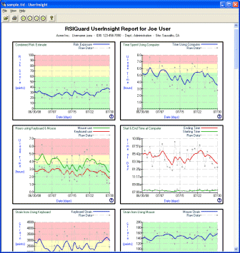
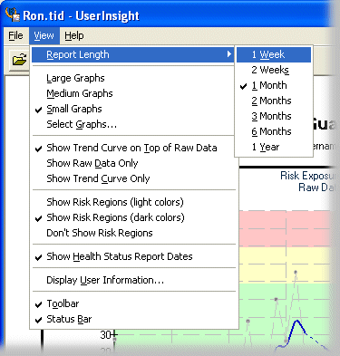
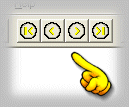
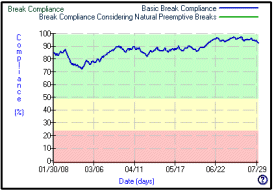
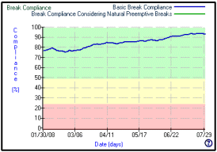
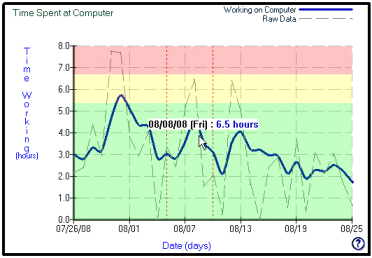
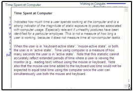

The DataLogger feature of RSIGuard records continuous ergonomic data, such as how much time you spend using the mouse and keyboard, how often you take suggested breaks and other ways that you interact with the computer that indicate your risk for injury. RSIGuard typically stores this data on your hard drive (or a network drive if configured for your company).
The exclusive purpose of this data is to help you, your doctor or other medical professionals, and your organization to determine risk factors that may predispose you to developing discomfort and/or to help you correct problems that may reduce any discomfort you already experience.
To view your data, go to the Tools menu of RSIGuard, select DataLogger Usage Statistics and then View Longterm Usage Statistics. This launches the UserInsight Viewer:

UserInsight View Menu Options
From the View menu, you can specify what data you wish to view and how you want to see it:
Report Length - Select the amount of data you wish to view at a time (from 1 week to 1 year). To change the range of the data to earlier or later, see Scrolling Through Data.
Graph Size and Selection - Select the desired size of graphs (large, medium or small). Use Select Graphs to select which graphs to show or hide.
Data Representation - Select whether you want to see the raw data, a smoothed (averaged) version of the graph that shows data trends, or a smoothed trend graph superimposed on top of the raw data. Raw data shows the actual values recorded each day. Trend data shows an averaged curve that indicates data trends (e.g., increasing or decreasing). To adjust the degree to which trend data is averaged, see Adjusting Trend Averaging.
Risk regions coloring - Select to show red/yellow/green regions to indicate data that is of more concern (red/yellow) or less concern (green).
Health Status Reports Dates - Select whether you want to see markings that show dates on which you filed Health Status Reports. Double-clicking on these marks shows the reports that are filed using the Health Status Reports Tool (RSIGuard v5 only).
Display User Information - Shows additional user information (such as, organization name and department).
Toolbar and Status Bar - Select to show or hide the Toolbar and Status Bar.

Scrolling Through Data
By default, UserInsight shows your most recent data. Use the left arrow key to scroll back to view older data. Use the right arrow ket to see the newer data. Press Ctrl+Left to scroll to the start of your data, or Ctrl+Right to scroll to the most recent data again. Alternately, you can use the scroll buttons on the Toolbar.

Adjusting Trend Averaging
UserInsight has an option to show a trend graph. Trend graphs are averaged data that let you see trends in the underlying data. For example, if the hours you spend on the computer are, on average, increasing, and you work different lengths of time each day, the trend graph will show the increase even if the underlying data is bouncing up and down.
If you have chosen to show trend data (View menu > Show Trend Curve), you can select to what degree the data is averaged (smoothed) by pressing Ctrl Up-Arrow and Ctrl Down-Arrow. More smoothing helps visualize trends, whereas less smoothing highlights daily values.


The above two graphs correspond to the same data. However, the data on the left is less smoothed. The upward trend is clearer on the graph on the right and shows that break compliance has, on average, increased from about 78% to 92% over the 6 months that are shown.
Viewing Individual Data Points
If you wish to see the precise value of a statistic on a particular day, move the mouse over that graph and the statistic will be displayed.

Printing Reports
After selecting the viewing options you want, you can print UserInsight graphs. Click on File and select Print (or Print Preview). You can also click the Printer icon in the toolbar (or press Ctrl P). The print window allows you to either print selected pages of the reports or the entire report.
Exporting DataLogger Data
You can export your DataLogger data to CSV format, and then import it into a database or spreadsheet program. To do so, click the File menu and select Export Data...
What do the Graphs Show?
Each graph has a context help button () in the lower-right corner. Position the mouse over the button, and a help window will describe what that graph tells you.

Detailed technical descriptions of DataLogger data are available in a document called the DataLogger Detailed Analysis.
Time Spent at Computer - Shows how many hours during your workday are spent at the computer and away from the computer.
Hours Using Keyboard and Mouse - Shows how many hours are spent using the keyboard and the mouse individually. Note that the sum of these two numbers doesn't equal time spent at the computer because you often use the keyboard and mouse at the same time.
Strain from Using Keyboard - Based on a study of strain associated with different keyboard actions (e.g., pressing 'A' vs. 'G', pressing 'P' vs. 'Ctrl P', etc.), this statistic estimates your exposure to muscle strain. This measurement gives a relative measure of strain exposure between your exposure at various points in time or between different people. However, there are no established thresholds of safe or unsafe exposure.
Strain from Using Mouse - Based on a study of strain associated with different mouse actions (e.g., single click vs. double click, drag and drop operations, etc.), this statistic estimates your exposure to muscle strain. This measurement gives a relative measure of strain exposure between your exposure at various points in time or between different people. However, there are no established thresholds of safe or unsafe exposure.
Start and End Time at Computer - Shows the starting and ending times of your daily computer use.
BreakTimer Breaks Taken and Skipped - Shows how many BreakTimer-suggested breaks you took and how many you skipped.
Microbreaks Taken and Skipped - Shows how many Microbreaks you took and how many you ignored.
Natural Breaks Taken - Shows how many natural rests you took while using the computer. Four different lengths of natural rest breaks are measured and displayed.
Time in BreakTimer Breaks - Shows how many minutes you spent in BreakTimer-suggested breaks.
Minutes Breaks Postponed - Shows how many minutes you put off taking BreakTimer-suggested breaks using the "Postpone Break" buttons.
Stretches Viewed - Shows how many stretches were displayed to you during BreakTimer-suggested breaks.
Keypress Force Estimate - Shows an estimate of how hard you struck keys during the day based on a model that measures force by watching how long keys are held down.
Keypresses - Shows how many keypresses you made during each day.
Mouse Movement - Shows an estimate of how much mouse movement you performed each day.
Mouse Clicks - Shows how many mouse clicks you performed each day.
AutoClicks - Shows how many mouse clicks you avoided by using AutoClick.
Manual and KeyControl Drag and Drops - Shows how many times you performed drag and drop operations using the mouse, and how many times you performed drag and drop operations using KeyControl.
Switches between Keyboard and Mouse - Shows how many times you switched from the mouse to the keyboard or vice versa.
Typing Corrections - Shows how many times you pressed sequences of delete or backspace keys. These can be an indication of how many errors a user is making (assuming the user's job is not, for example, copy editing).
Words Typed - Shows how many words you typed while using the computer.
Keystroke Frequency by Key - Shows how much you use each key on the keyboard. Usage is expressed as a percentage of total key pressing.
Keystrike Pressure by Key - Shows an estimate of how hard you strike each key on the keyboard based on a model that measures the length of time you hold each key down.
More Information About RSIGuard DataLogger
To learn more about how organizations that network RSIGuard installations can report on RSIGuard data, see the RSIGuard Reporting page.
To see more technical information about RSIGuard data (e.g. useful for researchers), see RSIGuard DataLogger Analysis.